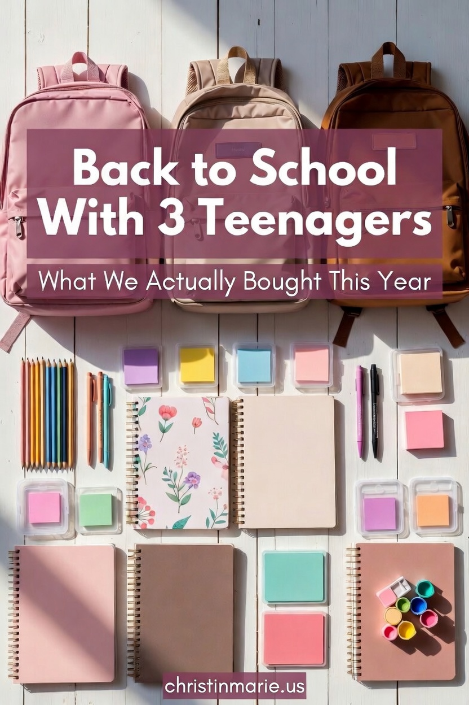
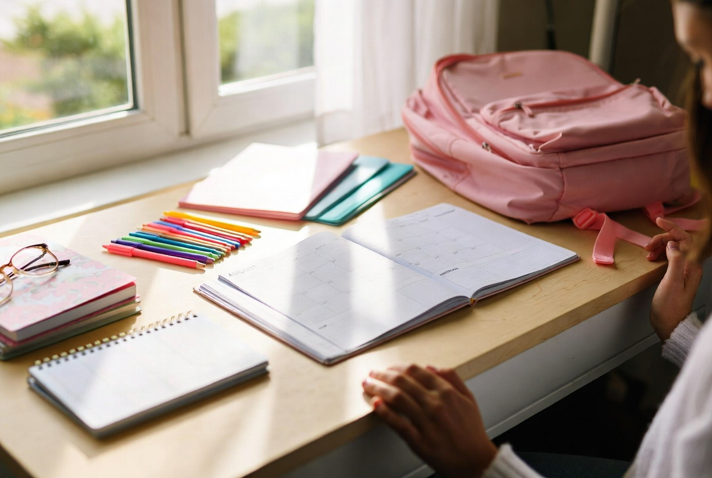
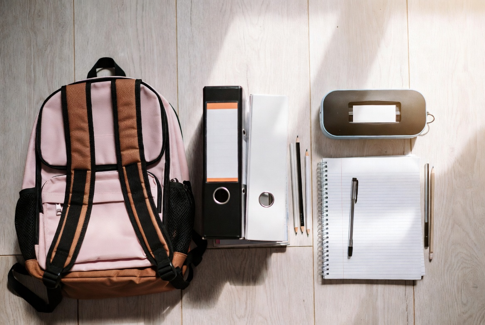
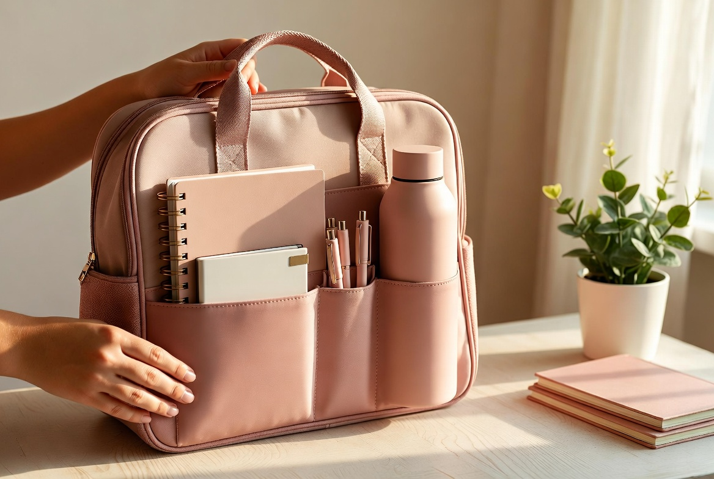
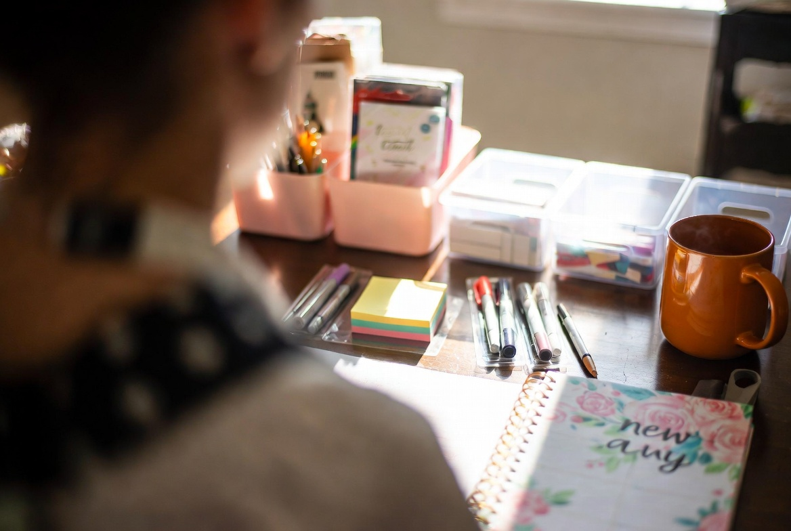

Back to School With Three Teenagers: What This Season Actually Looks Like
August 2025
Every August I tell myself this is going to be the calm, organized year. The year where I have everything sorted by July, the lists are done early, and nobody is running around three days before school starts looking for a specific kind of notebook that apparently only one store in the state carries.
Reader, it is never that year.
What I have gotten good at over time is knowing what each of my three kids actually needs versus what the school supply list says they need versus what they will actually use. After years of buying things that lived at the bottom of a backpack untouched until May, I have a pretty good system now. It is not perfect, but it works for us.
Here is what back to school actually looked like in our house this year.
We Start With a Planning Session (Whether They Like It or Not)

Before anything gets purchased, we sit down together -- each kid, their previous year's teacher supply list if I saved it, and whatever their new school sends home. This sounds more organized than it actually is. Usually there is a lot of sighing involved.
But I have found that the kids who have some say in what they are getting actually use their supplies. My oldest, E, has very specific opinions about planners and notebooks. If I just buy her whatever, it ends up being the wrong color or the wrong size and she goes out and buys her own anyway. So now I just loop her in from the start and save us both the headache.
The planning session also gives me a chance to figure out what can carry over from last year. Pencil case still good? Keep it. Binders still intact? Keep them. Half of back to school shopping is just figuring out what you do not actually need to replace.
Three Kids, Three Completely Different Situations
This is the part that makes back to school complicated in our house. My three are not all at the same school, they are not all in the same situation, and they do not need the same things.
E is heading into a situation where organization is everything. She needed a solid planner, good pens, and a bag that actually holds what she needs without falling apart. She is not a fancy supplies person -- she wants things that work.
My middle needs the classics. Notebooks, folders, the specific mechanical pencils she likes, and she is set. She is low maintenance in the best possible way when it comes to school supplies.
My youngest is the one who makes the list complicated. He loses things. Not in a careless way, just in a he is genuinely busy in his brain and things get put down and left there kind of way. So we buy multiples of the small stuff and I do not stress about it anymore.

Once we have each kid's list sorted, I lay everything out before it goes into the bag. It sounds unnecessary but it has saved me more than once from buying something we already had or missing something that got lost in the shuffle of a busy cart.
This year the essentials for all three were pretty consistent: a good backpack, at least two notebooks per subject, folders, pens and pencils, a planner, and something to keep small things contained. After that, it depends on the kid and the year.
The Bags Are the Biggest Decision

I am a firm believer that the right bag makes the whole year easier. A bad bag -- one that does not hold enough, one that the zipper breaks on in October, one that sits weird on their back -- creates low-grade misery for nine months.
What I look for in a good school bag for teenagers: enough main compartment space for a laptop and binders, exterior pockets that are actually useful (not decorative), padded straps, and something that can handle being thrown around a little. Teenagers are not gentle with their stuff. I have accepted this.
This year we went with bags that have the organizational exterior pockets built in -- the kind that hold a water bottle on the side, pens in a front slot, and small things like earbuds and lip balm in easy reach without digging through the whole bag. Once it is packed and organized at the start of the year, everything has a place and it is so much easier to keep it that way.
E's bag this year is a more structured tote style, which works for where she is. The other two have traditional backpacks. Fit to the kid, every time.
Getting the Study Space Ready

Something I have noticed over the years is that the kids who have a real place to work actually do their work. Not a revolutionary observation, but it matters more than I expected when they were younger.
Each of my kids has their own desk space now, and part of back to school for us is resetting those spaces. We clear out what accumulated over the summer, restock the things that ran out, and make sure everything they need is within reach before school starts.
The basics that I always restock: sticky notes in multiple colors, fine-tip pens and pencils, a small desktop organizer for frequently used things, and a fresh planner or calendar they can keep at their desk separate from the one in their bag. My middle daughter has been using the same floral spiral planner style for three years now -- she loves it and it is one of those things where I just get her the same one every August and she is happy.
I also make sure they each have something warm to drink nearby when they study. This is a me thing that has apparently rubbed off on them. Homework is better with a warm mug. I stand by this.
What I Have Learned After Years of Doing This
Buy less than you think you need in July. You will have a much better sense of what is actually needed once school starts and you can fill in from there. The September school supply section at Walmart is significantly less picked over than the August one, and half the stuff you panic-bought in late July is still sitting in the bottom of a drawer.
Ask your kid what they actually want. Even if their answer surprises you. E stopped using spiral notebooks two years ago and switched entirely to composition books because they do not bend in her bag. I never would have known that if I had not asked.
The school supply list is a starting point, not a contract. Some things on it you will use, some things you will not. Teachers send those lists home in good faith, but every kid's situation is different. Buy the basics first and wait and see on the rest.
And finally: this season is loud and chaotic and there are always a few last-minute runs to the store. That is just what it is. Do your best, give yourself some grace, and know that by October everyone will be settled and the chaos will feel like a distant memory.
Until next August, when we do it all again.
This post contains affiliate links. As a Walmart Creator affiliate, I may earn a commission on qualifying purchases at no additional cost to you. Full disclosure here.